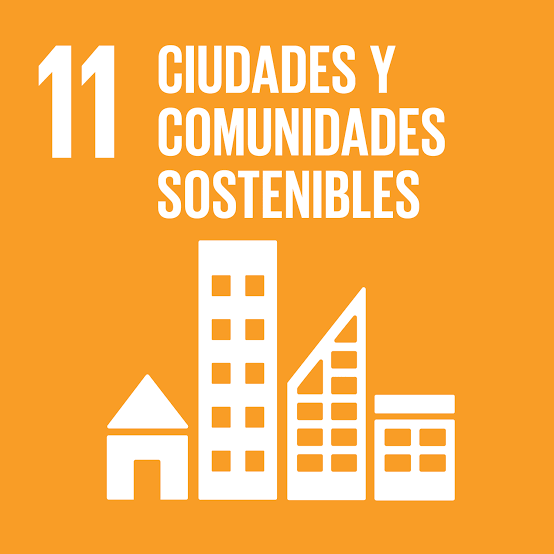
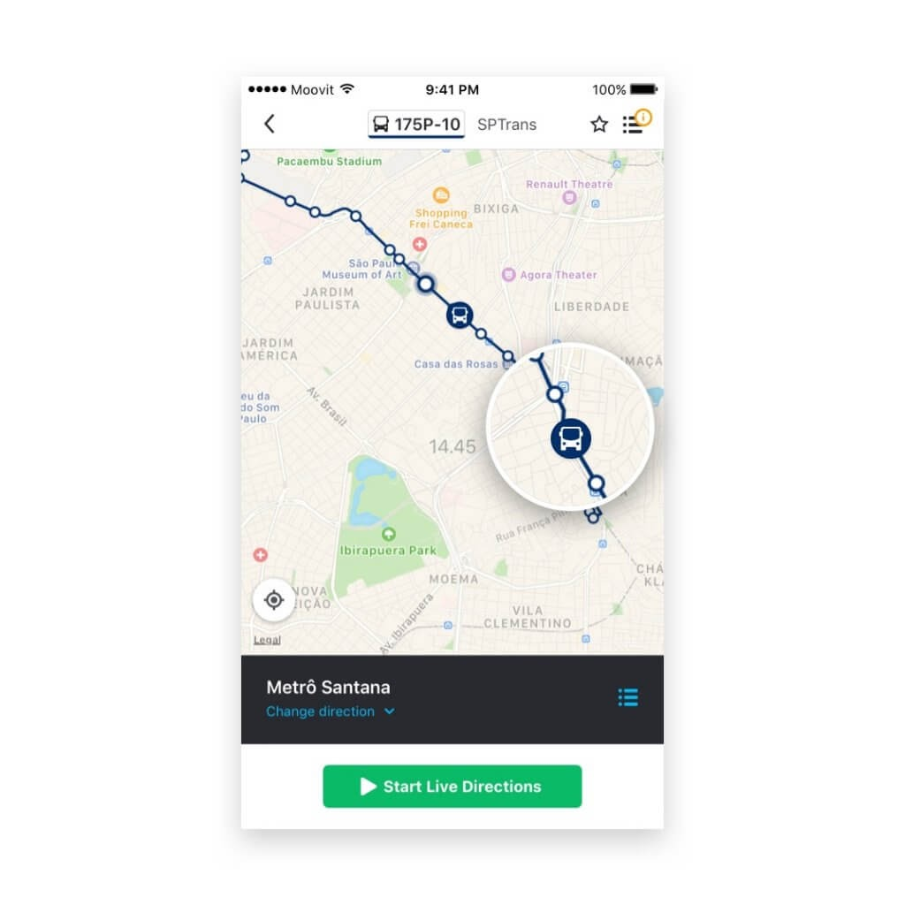

Entrada y salida de buses
Consulta el flujo constante de las unidades de transporte en tiempo real.
Ver rutas activasMOVILIDAD URBANA SOSTENIBLE · ODS 11
Visualiza la entrada y salida de buses en tiempo real. Con nuestro mapa GPS interactivo, descubre exactamente cuánto falta para tu ruta y promueve ciudades más conectadas.
Ver mapa en vivo Conocer ODS 11Plataforma tecnológica para una movilidad inteligente.


Conectando la ciudad en tiempo real
JZNG es una aplicación diseñada bajo los principios del ODS 11, facilitando información precisa sobre el transporte público para reducir la incertidumbre en los desplazamientos diarios.
Monitorear la entrada y salida de diferentes buses mediante un mapa GPS interactivo que muestra el tiempo exacto de llegada a tu paradero.
Un recorrido sencillo
Consulta el flujo constante de las unidades de transporte en tiempo real.
Ver rutas activasUbica la posición exacta de los vehículos en la ciudad al instante.
Ver mapa en vivoConoce cuánto falta exactamente para que tu ruta llegue a tu paradero.
Ver la guíaEstado de rutas en tiempo real
Elige una ruta de demostración para revisar su estado GPS y nivel de ocupación en tiempo real.
Simulación interactiva basada en datos de demostración de JZNG.
Consulta de rutas
Completa datos ficticios para probar la simulación del mapa GPS interactivo en tiempo real.
Esta práctica no almacena información de ubicación real ni realiza seguimiento personal.